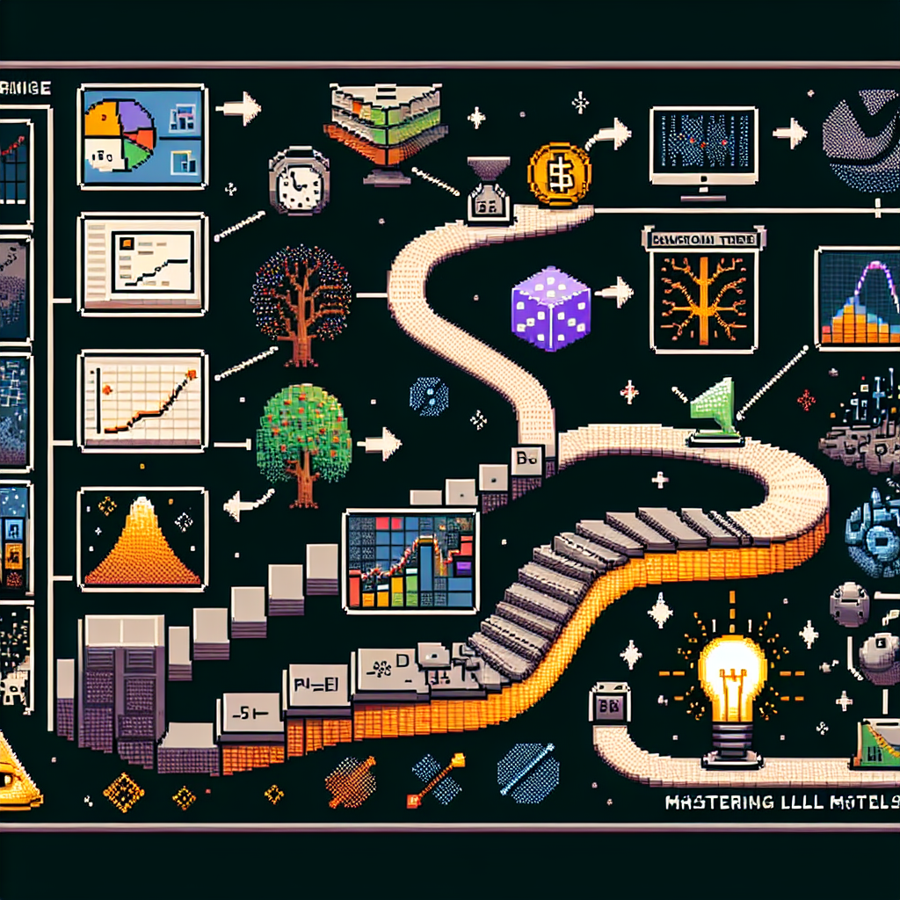

Best first steps for learning LLMs
"Ingrid's Blog: Best First Steps for Learning LLMs
Date: May 25, 2024
Tags: tech, LLM, beginner
Summary:
In this blog post, Ingrid shares her insights on the essential steps for grasping LLM (Large Language Models) as a beginner. She emphasizes the importance of laying a strong foundation before diving deeper into this field.
Full Text:
If you are looking to embark on a journey to understand LLMs as a novice, there are key initial steps that can significantly aid in your learning process. As a data scientist delving into the world of LLM and AI, I have found that establishing a solid groundwork is crucial for comprehending the complexities of these technologies.
First and foremost, familiarize yourself with the basic concepts and principles of LLMs. This includes understanding the underlying architecture, how they process language data, and their applications in various industries. By building a strong knowledge base, you will be better equipped to tackle more advanced topics down the line.
Next, immerse yourself in practical exercises and projects that allow you to apply your newfound knowledge. Hands-on experience is invaluable when it comes to grasping the intricacies of LLMs. Consider working on sample datasets, experimenting with different models, and engaging in coding challenges to enhance your skills.
Additionally, seek out resources such as online courses, tutorials, and forums dedicated to LLMs. These platforms can provide valuable insights, tips, and support from experts in the field. Engaging with the community and staying updated on the latest developments will further enrich your learning journey.
In conclusion, mastering LLMs as a beginner requires patience, dedication, and a structured approach. By taking these initial steps, you can lay a solid foundation for your exploration of this fascinating technology. Stay curious, keep learning, and embrace the challenges that come your way. The world of LLMs awaits your discovery!"
Stay tuned for more insightful content from Ingrid on her journey into the realm of data science and AI.